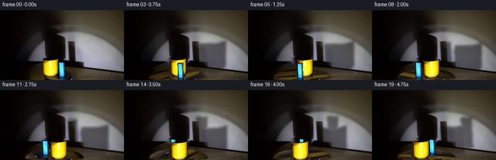
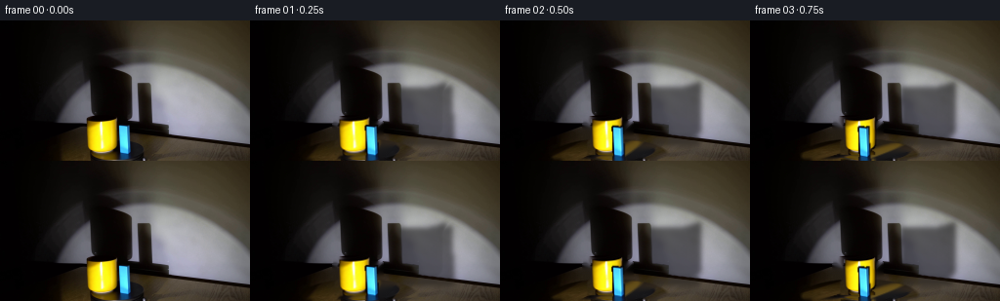

CODING AGENTS AS PIXEL WORLD MODELS
traex/GPT-5.6-Sol · 0081
点击播放 · 原生 RGB 像素
逐轮保存的候选
回放视频、检查图与代码变化。
每份候选均可单独播放。实际图片检查记录在下方工具轨迹中。
候选 01播放与检查图
点击播放 · 原生 RGB 像素


展开代码变化
--- 上一保存版本
+++ 本次保存版本
@@ -0,0 +1,203 @@
+from pathlib import Path
+import math
+import cv2
+import numpy as np
+from PIL import Image
+import artifact_io
+
+# PixelWorld case 0081: analytic 2.5-D animation made solely from the supplied frame.
+CASE_DIR = Path(__file__).resolve().parent
+W, H, N, FPS = 256, 144, 20, 4
+
+
+def largest_component(mask):
+ count, labels, stats, _ = cv2.connectedComponentsWithStats(mask.astype(np.uint8), 8)
+ if count <= 1:
+ return mask.astype(np.uint8)
+ i = 1 + int(np.argmax(stats[1:, cv2.CC_STAT_AREA]))
+ return (labels == i).astype(np.uint8) * 255
+
+
+def object_masks(src):
+ hsv = cv2.cvtColor(src, cv2.COLOR_RGB2HSV)
+ yy, xx = np.mgrid[:H, :W]
+
+ # Saturated paint is an especially clean matte in the supplied photograph.
+ mug = cv2.inRange(hsv, (12, 65, 45), (48, 255, 255))
+ mug[(xx < 85) | (xx > 122) | (yy < 97) | (yy > 137)] = 0
+ mug = largest_component(mug)
+ mug = cv2.morphologyEx(mug, cv2.MORPH_CLOSE, np.ones((3, 3), np.uint8), iterations=1)
+ # Include the pale specular stripe inside the painted silhouette.
+ contours, _ = cv2.findContours(mug, cv2.RETR_EXTERNAL, cv2.CHAIN_APPROX_SIMPLE)
+ mug_fill = np.zeros_like(mug)
+ cv2.drawContours(mug_fill, contours, -1, 255, cv2.FILLED)
+ mug = cv2.dilate(mug_fill, np.ones((3, 3), np.uint8), iterations=1)
+
+ block = cv2.inRange(hsv, (84, 48, 30), (139, 255, 255))
+ block[(xx < 117) | (xx > 138) | (yy < 102) | (yy > 143)] = 0
+ block = largest_component(block)
+ block = cv2.morphologyEx(block, cv2.MORPH_CLOSE, np.ones((3, 3), np.uint8), iterations=1)
+ contours, _ = cv2.findContours(block, cv2.RETR_EXTERNAL, cv2.CHAIN_APPROX_SIMPLE)
+ block_fill = np.zeros_like(block)
+ cv2.drawContours(block_fill, contours, -1, 255, cv2.FILLED)
+ block = cv2.dilate(block_fill, np.ones((3, 3), np.uint8), iterations=1)
+
+ # A subpixel feather retains the photographed edge antialiasing.
+ mug_a = cv2.GaussianBlur(mug, (0, 0), .48).astype(np.float32) / 255.0
+ block_a = cv2.GaussianBlur(block, (0, 0), .48).astype(np.float32) / 255.0
+ return mug_a, block_a
+
+
+def affine_sprite(src, alpha, anchor, dest, sx=1.0, sy=1.0):
+ ax, ay = anchor
+ dx, dy = dest
+ matrix = np.float32([[sx, 0.0, dx - sx * ax], [0.0, sy, dy - sy * ay]])
+ rgb = cv2.warpAffine(src, matrix, (W, H), flags=cv2.INTER_CUBIC,
+ borderMode=cv2.BORDER_CONSTANT, borderValue=(0, 0, 0))
+ a = cv2.warpAffine(alpha, matrix, (W, H), flags=cv2.INTER_LINEAR,
+ borderMode=cv2.BORDER_CONSTANT, borderValue=0)
+ return rgb.astype(np.float32), np.clip(a, 0, 1)
+
+
+def over(dst, rgb, alpha):
+ a = alpha[..., None]
+ return dst * (1.0 - a) + rgb * a
+
+
+def rotate_tabletop(base, angle):
+ # Rotation in normalized tabletop coordinates makes a circle viewed obliquely
+ # remain an ellipse. Only the black platter is remapped.
+ cx, cy, rx, ry = 112.0, 138.2, 62.0, 18.0
+ yy, xx = np.mgrid[:H, :W].astype(np.float32)
+ u = xx - cx
+ v = (yy - cy) * (rx / ry)
+ ca, sa = math.cos(angle), math.sin(angle)
+ # inverse map for clockwise forward motion
+ us = ca * u + sa * v
+ vs = -sa * u + ca * v
+ mapx = (cx + us).astype(np.float32)
+ mapy = (cy + vs * (ry / rx)).astype(np.float32)
+ spun = cv2.remap(base, mapx, mapy, cv2.INTER_LINEAR,
+ borderMode=cv2.BORDER_REFLECT_101)
+ q = (u / rx) ** 2 + ((yy - cy) / ry) ** 2
+ matte = np.clip((1.0 - q) / .13, 0, 1)
+ # Preserve the lower rim and softly rotate only the visible upper surface.
+ matte *= np.clip((143.5 - yy) / 4.0, 0, 1)
+ return base * (1 - matte[..., None]) + spun * matte[..., None]
+
+
+def orbit(initial_anchor, angle):
+ # Recover a location in the turntable plane, rotate clockwise, then project it.
+ cx, cy = 112.0, 139.0
+ squash = .35
+ x0, y0 = initial_anchor
+ u, v = x0 - cx, (y0 - cy) / squash
+ ca, sa = math.cos(angle), math.sin(angle)
+ ur = ca * u - sa * v
+ vr = sa * u + ca * v
+ return (cx + ur, cy + squash * vr), vr
+
+
+def soft_ellipse(shape, center, axes, sigma=2.0):
+ m = np.zeros(shape, np.float32)
+ cv2.ellipse(m, (int(round(center[0])), int(round(center[1]))),
+ (int(round(axes[0])), int(round(axes[1]))), 0, 0, 360, 1.0, -1,
+ lineType=cv2.LINE_AA)
+ return cv2.GaussianBlur(m, (0, 0), sigma)
+
+
+def projected_shadow(alpha, source_anchor, shadow_foot, scale_x, scale_y):
+ # Project the actual object matte enlarged onto the rear wall.
+ ax, ay = source_anchor
+ sx, sy = shadow_foot
+ matrix = np.float32([[scale_x, 0, sx - scale_x * ax],
+ [0, scale_y, sy - scale_y * ay]])
+ m = cv2.warpAffine(alpha, matrix, (W, H), flags=cv2.INTER_LINEAR,
+ borderMode=cv2.BORDER_CONSTANT, borderValue=0)
+ return cv2.GaussianBlur(m, (0, 0), 2.5)
+
+
+def main():
+ src = np.asarray(Image.open(CASE_DIR / 'first_frame.png').convert('RGB'), dtype=np.uint8)
+ assert src.shape == (H, W, 3)
+ mug_a, block_a = object_masks(src)
+
+ # Remove only the two movable objects. Telea reconstruction is used under them;
+ # all apparatus, the fixed lamp, wall, and existing broad cast shading remain.
+ removal = ((mug_a > .03) | (block_a > .03)).astype(np.uint8) * 255
+ removal = cv2.dilate(removal, np.ones((5, 5), np.uint8), iterations=1)
+ clean = cv2.inpaint(cv2.cvtColor(src, cv2.COLOR_RGB2BGR), removal, 4,
+ cv2.INPAINT_TELEA)
+ clean = cv2.cvtColor(clean, cv2.COLOR_BGR2RGB).astype(np.float32)
+
+ mug_anchor = (104.5, 136.0)
+ block_anchor = (128.0, 142.0)
+ frames = [src.copy()]
+
+ # One revolution in 6.0 s: clearly visible, yet appropriate to a demonstration.
+ omega = 2 * math.pi / 6.0
+ yy, xx = np.mgrid[:H, :W]
+ wall_gate = np.clip((xx - 132) / 18.0, 0, 1)
+ # Shadows register mostly on the illuminated wall, not over the black apparatus.
+ luminance = cv2.cvtColor(src, cv2.COLOR_RGB2GRAY).astype(np.float32)
+ wall_gate *= np.clip((luminance - 25) / 75.0, .10, 1.0)
+ wall_gate *= np.clip((138 - yy) / 13.0, 0, 1)
+
+ for i in range(1, N):
+ t = i / FPS
+ angle = omega * t
+ frame = rotate_tabletop(clean, angle)
+
+ mug_pos, mug_depth = orbit(mug_anchor, angle)
+ block_pos, block_depth = orbit(block_anchor, angle)
+
+ # Enlarged, soft wall silhouettes. They follow the turntable positions but
+ # move farther than the objects, as expected from a nearby spotlight.
+ mdx, mdy = mug_pos[0] - mug_anchor[0], mug_pos[1] - mug_anchor[1]
+ bdx, bdy = block_pos[0] - block_anchor[0], block_pos[1] - block_anchor[1]
+ ms = projected_shadow(mug_a, mug_anchor,
+ (170.0 + 1.55 * mdx, 126.0 + 1.25 * mdy), 1.72, 1.66)
+ bs = projected_shadow(block_a, block_anchor,
+ (202.0 + 1.55 * bdx, 127.0 + 1.25 * bdy), 1.72, 1.72)
+ shadow = np.clip(np.maximum(ms * .58, bs * .54) * wall_gate, 0, .64)
+ shadow_rgb = np.empty_like(frame)
+ shadow_rgb[:] = (13, 12, 11)
+ frame = over(frame, shadow_rgb, shadow)
+
+ # Small, directionally stretched contact shadows pin both objects to the disk.
+ contact = np.maximum(
+ soft_ellipse((H, W), (mug_pos[0] + 1, mug_pos[1] + .5), (11, 2.4), 1.35) * .44,
+ soft_ellipse((H, W), (block_pos[0] + 1, block_pos[1] + .3), (8, 2.0), 1.15) * .48,
+ )
+ frame = over(frame, np.zeros_like(frame) + np.array([3, 3, 3]), contact)
+
+ # Perspective scale varies slightly with depth. The rectangular block also
+ # changes apparent width as its horizontal orientation turns with the disk.
+ mug_scale = np.clip(1.0 + (mug_pos[1] - mug_anchor[1]) * .007, .92, 1.08)
+ block_scale = np.clip(1.0 + (block_pos[1] - block_anchor[1]) * .007, .91, 1.08)
+ theta0 = math.atan2((block_anchor[1] - 139.0) / .35,
+ block_anchor[0] - 112.0)
+ width0 = .78 + .22 * abs(math.cos(theta0))
+ width_now = .78 + .22 * abs(math.cos(theta0 + angle))
+ block_sx = block_scale * width_now / width0
+
+ mug_rgb, ma = affine_sprite(src, mug_a, mug_anchor, mug_pos,
+ mug_scale, mug_scale)
+ block_rgb, ba = affine_sprite(src, block_a, block_anchor, block_pos,
+ block_sx, block_scale)
+
+ # Far object first gives correct occlusion on the rear half of the platter.
+ layers = [(mug_pos[1], mug_rgb, ma), (block_pos[1], block_rgb, ba)]
+ for _, rgb, a in sorted(layers, key=lambda z: z[0]):
+ frame = over(frame, rgb, a)
+
+ frames.append(np.clip(np.rint(frame), 0, 255).astype(np.uint8))
+
+ frames = np.stack(frames, axis=0)
+ assert frames.shape == (N, H, W, 3) and frames.dtype == np.uint8
+ assert np.array_equal(frames[0], src)
+ artifact_io.save(frames, CASE_DIR)
+
+
+if __name__ == '__main__':
+ main()
可观测工具轨迹
实际执行的命令与返回图片。
命令 1exit 0
/bin/bash -lc "cat GENERATION_RULES.md && printf '\\n--- PROMPT ---\\n' && cat prompt.txt"
命令 2exit 0
/bin/bash -lc "find . -maxdepth 2 -type f -printf '%p\\n' | sort && printf '\\n--- IMAGE INFO ---\\n' && python3 - <<'PY'
from PIL import Image
im=Image.open('first_frame.png')
print(im.mode, im.size)
print(im.getextrema())
PY"命令 3exit 0
/bin/bash -lc "cat > .tmp/analyze.py <<'PY'
import cv2, numpy as np
from PIL import Image
im=np.array(Image.open('first_frame.png'))
h,w,_=im.shape
# kmeans Lab
lab=cv2.cvtColor(im,cv2.COLOR_RGB2LAB).reshape(-1,3).astype(np.float32)
crit=(cv2.TERM_CRITERIA_EPS+cv2.TERM_CRITERIA_MAX_ITER,100,.1)
_,lbl,cen=cv2.kmeans(lab,12,None,crit,20,cv2.KMEANS_PP_CENTERS)
cenrgb=cv2.cvtColor(cen.astype(np.uint8).reshape(1,-1,3),cv2.COLOR_LAB2RGB)[0]
counts=np.bincount(lbl[:,0],minlength=12)
order=np.argsort(-counts)
print('clusters count/rgb/bbox')
L=lbl[:,0].reshape(h,w)
for i in order:
ys,xs=np.where(L==i)
print(i, counts[i], cenrgb[i].tolist(), (xs.min(),ys.min(),xs.max(),ys.max()))
# symbolic downsample every 4x4 majority
chars='0123456789AB'
print('\\nmap (4x4 blocks), labels correspond above IDs:')
for y in range(0,h,4):
s=''
for x in range(0,w,4):
z=L[y:min(y+4,h),x:min(x+4,w)].ravel(); s+=chars[np.bincount(z,minlength=12).argmax()]
print(s)
# HSV simple masks components
hsv=cv2.cvtColor(im,cv2.COLOR_RGB2HSV)
masks={
'yellow':cv2.inRange(hsv,(15,70,60),(45,255,255)),
'blue':cv2.inRange(hsv,(85,60,30),(135,255,255)),
'dark':cv2.inRange(hsv,(0,0,0),(180,255,50)),
'bright':cv2.inRange(hsv,(0,0,180),(180,100,255)),
}
for name,m in masks.items():
n,l,st,c=cv2.connectedComponentsWithStats(m)
comps=sorted(st[1:].tolist(),key=lambda z:z[4],reverse=True)[:10]
print(name,'pixels',np.count_nonzero(m),'components',comps)
# row mean and gradient
print('row mean every 8')
for y in range(0,h,8): print(y, np.mean(im[y:y+8],axis=(0,1)).round(1).tolist())
PY
python3 .tmp/analyze.py"命令 4exit 0
/bin/bash -lc "python3 - <<'PY'
import cv2,numpy as np
from PIL import Image
im=np.array(Image.open('first_frame.png')); hsv=cv2.cvtColor(im,cv2.COLOR_RGB2HSV)
# show categorized ROI x75:145 y90:144, each 2x2 based avg or masks
for y in range(90,144):
s=''
for x in range(75,146):
h,sat,v=hsv[y,x]; r,g,b=im[y,x]
if 15<=h<=45 and sat>=70 and v>=60: c='Y'
elif 85<=h<=135 and sat>=60 and v>=30:c='B'
elif v<25:c=' '
elif v<50:c='.'
elif v<90:c=':'
elif v<140:c='o'
elif v<190:c='O'
else:c='#'
s+=c
print(f'{y:3} {s}')
PY"命令 5exit 0
/bin/bash -lc "sed -n '1,240p' artifact_io.py && python3 - <<'PY'
import cv2,numpy as np
from PIL import Image
im=np.array(Image.open('first_frame.png'))
# print HSV/RGB samples and per-column nonblack means
for y,x in [(0,0),(0,128),(0,200),(50,60),(50,100),(50,160),(80,100),(80,160),(100,80),(100,160),(120,50),(120,150),(120,220),(140,50),(140,150),(140,220)]: print((x,y),im[y,x].tolist())
# edge components contours for Canny
ed=cv2.Canny(im,50,120)
n,l,st,c=cv2.connectedComponentsWithStats(ed)
print('edges comps', sorted(st[1:].tolist(), key=lambda z:z[4], reverse=True)[:20])
PY"命令 6exit 0
/bin/bash -lc "python3 - <<'PY'
import cv2,numpy as np
from PIL import Image
im=np.array(Image.open('first_frame.png')); hsv=cv2.cvtColor(im,cv2.COLOR_RGB2HSV)
for name,mask in [('yellow',cv2.inRange(hsv,(15,70,60),(45,255,255))),('blue',cv2.inRange(hsv,(85,60,30),(135,255,255)))]:
print('\\n',name)
for y in range(96,144):
xs=np.where(mask[y]>0)[0]
# runs in 60:150
xs=xs[(xs>=60)&(xs<150)]
if len(xs):
spl=np.split(xs,np.where(np.diff(xs)>1)[0]+1)
print(y,[(int(z[0]),int(z[-1])) for z in spl])
PY"命令 7exit 0
/bin/bash -lc "python3 - <<'PY'
from PIL import Image
import numpy as np, cv2
im=np.array(Image.open('first_frame.png'))
# intensity category at 2px averaged. map for x130+, y50+, each 2x2
chars=' .:-=+*#%@'
g=cv2.cvtColor(im,cv2.COLOR_RGB2GRAY)
for y in range(40,144,2):
s=''
for x in range(40,256,2):
v=g[y:y+2,x:x+2].mean();s+=chars[min(9,int(v)//26)]
print(f'{y:3} {s}')
PY"命令 8exit 0
/bin/bash -lc "python3 - <<'PY'
from PIL import Image
import numpy as np,cv2
im=np.array(Image.open('first_frame.png')); g=cv2.cvtColor(im,cv2.COLOR_RGB2GRAY)
for y in [40,50,60,70,80,90,100,110,120,130]:
# runs quantized brightness bins threshold
vals=[]
last=None
for x in range(256):
c=int(g[y,x]//30)
if c"'!=last:
if last is not None: vals[-1][2]=x-1
vals.append([c,x,None]);last=c
vals[-1][2]=255
print(y,[(c,a,b) for c,a,b in vals if b-a>=3])
PY'命令 9exit 0
/bin/bash -lc "python3 - <<'PY'
from PIL import Image
import numpy as np
im=np.array(Image.open('first_frame.png'))
for y in range(100,144,4):
print('y',y,end=' ')
for x in range(120,256,8):
print('%3d'%np.mean(im[y,x]),end=' ')
print()
print('RGB select')
for y in [105,110,115,120,125,130,135,140,143]:
print(y,[(x,im[y,x].tolist()) for x in [120,130,140,150,160,170,180,190,200,210,220,230,240,250]])
PY"命令 10exit 0
/bin/bash -lc "cat > generate.py <<'PY'
from pathlib import Path
import math
import cv2
import numpy as np
from PIL import Image
import artifact_io
# PixelWorld case 0081: analytic 2.5-D animation made solely from the supplied frame.
CASE_DIR = Path(__file__).resolve().parent
W, H, N, FPS = 256, 144, 20, 4
def largest_component(mask):
count, labels, stats, _ = cv2.connectedComponentsWithStats(mask.astype(np.uint8), 8)
if count <= 1:
return mask.astype(np.uint8)
i = 1 + int(np.argmax(stats[1:, cv2.CC_STAT_AREA]))
return (labels == i).astype(np.uint8) * 255
def object_masks(src):
hsv = cv2.cvtColor(src, cv2.COLOR_RGB2HSV)
yy, xx = np.mgrid[:H, :W]
# Saturated paint is an especially clean matte in the supplied photograph.
mug = cv2.inRange(hsv, (12, 65, 45), (48, 255, 255))
mug[(xx < 85) | (xx > 122) | (yy < 97) | (yy > 137)] = 0
mug = largest_component(mug)
mug = cv2.morphologyEx(mug, cv2.MORPH_CLOSE, np.ones((3, 3), np.uint8), iterations=1)
# Include the pale specular stripe inside the painted silhouette.
contours, _ = cv2.findContours(mug, cv2.RETR_EXTERNAL, cv2.CHAIN_APPROX_SIMPLE)
mug_fill = np.zeros_like(mug)
cv2.drawContours(mug_fill, contours, -1, 255, cv2.FILLED)
mug = cv2.dilate(mug_fill, np.ones((3, 3), np.uint8), iterations=1)
block = cv2.inRange(hsv, (84, 48, 30), (139, 255, 255))
block[(xx < 117) | (xx > 138) | (yy < 102) | (yy > 143)] = 0
block = largest_component(block)
block = cv2.morphologyEx(block, cv2.MORPH_CLOSE, np.ones((3, 3), np.uint8), iterations=1)
contours, _ = cv2.findContours(block, cv2.RETR_EXTERNAL, cv2.CHAIN_APPROX_SIMPLE)
block_fill = np.zeros_like(block)
cv2.drawContours(block_fill, contours, -1, 255, cv2.FILLED)
block = cv2.dilate(block_fill, np.ones((3, 3), np.uint8), iterations=1)
# A subpixel feather retains the photographed edge antialiasing.
mug_a = cv2.GaussianBlur(mug, (0, 0), .48).astype(np.float32) / 255.0
block_a = cv2.GaussianBlur(block, (0, 0), .48).astype(np.float32) / 255.0
return mug_a, block_a
def affine_sprite(src, alpha, anchor, dest, sx=1.0, sy=1.0):
ax, ay = anchor
dx, dy = dest
matrix = np.float32([[sx, 0.0, dx - sx * ax], [0.0, sy, dy - sy * ay]])
rgb = cv2.warpAffine(src, matrix, (W, H), flags=cv2.INTER_CUBIC,
borderMode=cv2.BORDER_CONSTANT, borderValue=(0, 0, 0))
a = cv2.warpAffine(alpha, matrix, (W, H), flags=cv2.INTER_LINEAR,
borderMode=cv2.BORDER_CONSTANT, borderValue=0)
return rgb.astype(np.float32), np.clip(a, 0, 1)
def over(dst, rgb, alpha):
a = alpha[..., None]
return dst * (1.0 - a) + rgb * a
def rotate_tabletop(base, angle):
# Rotation in normalized tabletop coordinates makes a circle viewed obliquely
# remain an ellipse. Only the black platter is remapped.
cx, cy, rx, ry = 112.0, 138.2, 62.0, 18.0
yy, xx = np.mgrid[:H, :W].astype(np.float32)
u = xx - cx
v = (yy - cy) * (rx / ry)
ca, sa = math.cos(angle), math.sin(angle)
# inverse map for clockwise forward motion
us = ca * u + sa * v
vs = -sa * u + ca * v
mapx = (cx + us).astype(np.float32)
mapy = (cy + vs * (ry / rx)).astype(np.float32)
spun = cv2.remap(base, mapx, mapy, cv2.INTER_LINEAR,
borderMode=cv2.BORDER_REFLECT_101)
q = (u / rx) ** 2 + ((yy - cy) / ry) ** 2
matte = np.clip((1.0 - q) / .13, 0, 1)
# Preserve the lower rim and softly rotate only the visible upper surface.
matte *= np.clip((143.5 - yy) / 4.0, 0, 1)
return base * (1 - matte[..., None]) + spun * matte[..., None]
def orbit(initial_anchor, angle):
# Recover a location in the turntable plane, rotate clockwise, then project it.
cx, cy = 112.0, 139.0
squash = .35
x0, y0 = initial_anchor
u, v = x0 - cx, (y0 - cy) / squash
ca, sa = math.cos(angle), math.sin(angle)
ur = ca * u - sa * v
vr = sa * u + ca * v
return (cx + ur, cy + squash * vr), vr
def soft_ellipse(shape, center, axes, sigma=2.0):
m = np.zeros(shape, np.float32)
cv2.ellipse(m, (int(round(center[0])), int(round(center[1]))),
(int(round(axes[0])), int(round(axes[1]))), 0, 0, 360, 1.0, -1,
lineType=cv2.LINE_AA)
return cv2.GaussianBlur(m, (0, 0), sigma)
def projected_shadow(alpha, source_anchor, shadow_foot, scale_x, scale_y):
# Project the actual object matte enlarged onto the rear wall.
ax, ay = source_anchor
sx, sy = shadow_foot
matrix = np.float32([[scale_x, 0, sx - scale_x * ax],
[0, scale_y, sy - scale_y * ay]])
m = cv2.warpAffine(alpha, matrix, (W, H), flags=cv2.INTER_LINEAR,
borderMode=cv2.BORDER_CONSTANT, borderValue=0)
return cv2.GaussianBlur(m, (0, 0), 2.5)
def main():
src = np.asarray(Image.open(CASE_DIR / 'first_frame.png').convert('RGB'), dtype=np.uint8)
assert src.shape == (H, W, 3)
mug_a, block_a = object_masks(src)
# Remove only the two movable objects. Telea reconstruction is used under them;
# all apparatus, the fixed lamp, wall, and existing broad cast shading remain.
removal = ((mug_a > .03) | (block_a > .03)).astype(np.uint8) * 255
removal = cv2.dilate(removal, np.ones((5, 5), np.uint8), iterations=1)
clean = cv2.inpaint(cv2.cvtColor(src, cv2.COLOR_RGB2BGR), removal, 4,
cv2.INPAINT_TELEA)
clean = cv2.cvtColor(clean, cv2.COLOR_BGR2RGB).astype(np.float32)
mug_anchor = (104.5, 136.0)
block_anchor = (128.0, 142.0)
frames = [src.copy()]
# One revolution in 6.0 s: clearly visible, yet appropriate to a demonstration.
omega = 2 * math.pi / 6.0
yy, xx = np.mgrid[:H, :W]
wall_gate = np.clip((xx - 132) / 18.0, 0, 1)
# Shadows register mostly on the illuminated wall, not over the black apparatus.
luminance = cv2.cvtColor(src, cv2.COLOR_RGB2GRAY).astype(np.float32)
wall_gate *= np.clip((luminance - 25) / 75.0, .10, 1.0)
wall_gate *= np.clip((138 - yy) / 13.0, 0, 1)
for i in range(1, N):
t = i / FPS
angle = omega * t
frame = rotate_tabletop(clean, angle)
mug_pos, mug_depth = orbit(mug_anchor, angle)
block_pos, block_depth = orbit(block_anchor, angle)
# Enlarged, soft wall silhouettes. They follow the turntable positions but
# move farther than the objects, as expected from a nearby spotlight.
mdx, mdy = mug_pos[0] - mug_anchor[0], mug_pos[1] - mug_anchor[1]
bdx, bdy = block_pos[0] - block_anchor[0], block_pos[1] - block_anchor[1]
ms = projected_shadow(mug_a, mug_anchor,
(170.0 + 1.55 * mdx, 126.0 + 1.25 * mdy), 1.72, 1.66)
bs = projected_shadow(block_a, block_anchor,
(202.0 + 1.55 * bdx, 127.0 + 1.25 * bdy), 1.72, 1.72)
shadow = np.clip(np.maximum(ms * .58, bs * .54) * wall_gate, 0, .64)
shadow_rgb = np.empty_like(frame)
shadow_rgb[:] = (13, 12, 11)
frame = over(frame, shadow_rgb, shadow)
# Small, directionally stretched contact shadows pin both objects to the disk.
contact = np.maximum(
soft_ellipse((H, W), (mug_pos[0] + 1, mug_pos[1] + .5), (11, 2.4), 1.35) * .44,
soft_ellipse((H, W), (block_pos[0] + 1, block_pos[1] + .3), (8, 2.0), 1.15) * .48,
)
frame = over(frame, np.zeros_like(frame) + np.array([3, 3, 3]), contact)
# Perspective scale varies slightly with depth. The rectangular block also
# changes apparent width as its horizontal orientation turns with the disk.
mug_scale = np.clip(1.0 + (mug_pos[1] - mug_anchor[1]) * .007, .92, 1.08)
block_scale = np.clip(1.0 + (block_pos[1] - block_anchor[1]) * .007, .91, 1.08)
theta0 = math.atan2((block_anchor[1] - 139.0) / .35,
block_anchor[0] - 112.0)
width0 = .78 + .22 * abs(math.cos(theta0))
width_now = .78 + .22 * abs(math.cos(theta0 + angle))
block_sx = block_scale * width_now / width0
mug_rgb, ma = affine_sprite(src, mug_a, mug_anchor, mug_pos,
mug_scale, mug_scale)
block_rgb, ba = affine_sprite(src, block_a, block_anchor, block_pos,
block_sx, block_scale)
# Far object first gives correct occlusion on the rear half of the platter.
layers = [(mug_pos[1], mug_rgb, ma), (block_pos[1], block_rgb, ba)]
for _, rgb, a in sorted(layers, key=lambda z: z[0]):
frame = over(frame, rgb, a)
frames.append(np.clip(np.rint(frame), 0, 255).astype(np.uint8))
frames = np.stack(frames, axis=0)
assert frames.shape == (N, H, W, 3) and frames.dtype == np.uint8
assert np.array_equal(frames[0], src)
artifact_io.save(frames, CASE_DIR)
if __name__ == '__main__':
main()
PY
python3 generate.py
python3 - <<'PY'
import numpy as np
from PIL import Image
z=np.load('pixels.npz')['pixels']
print('pixels',z.shape,z.dtype)
frames=np.stack([np.array(Image.open(f'frames/{i:02d}.png')) for i in range(20)])
src=np.array(Image.open('first_frame.png'))
print('frames',frames.shape,frames.dtype,'frame0 exact',np.array_equal(frames[0],src))
print('changed pixels:',[int(np.count_nonzero(np.any(frames[i]"'!=frames[i-1],axis=2))) for i in range(1,20)])
print('"'mean abs deltas:',[round(float(np.mean(np.abs(frames[i].astype(float)-frames[i-1].astype(float)))),2) for i in range(1,20)])
PY"命令 11exit 0
/bin/bash -lc "python3 - <<'PY'
import cv2, numpy as np
from PIL import Image
for i in range(20):
im=np.array(Image.open(f'frames/{i:02d}.png'))
hsv=cv2.cvtColor(im,cv2.COLOR_RGB2HSV)
print(f'{i:02}',end=' ')
for name,lo,hi in [('Y',(15,90,80),(45,255,255)),('B',(85,60,30),(135,255,255))]:
m=cv2.inRange(hsv,lo,hi); n,l,s,c=cv2.connectedComponentsWithStats(m)
# component candidates in lower scene only
ids=[j for j in range(1,n) if c[j,1]>75 and c[j,0]<180]
if ids:
j=max(ids,key=lambda j:s[j,4]); print(f'{name}:n{s[j,4]:4d}@({c[j,0]:5.1f},{c[j,1]:5.1f}) box{s[j,2]}x{s[j,3]}',end=' ')
else: print(name+':none',end=' ')
print()
PY
python3 -m py_compile generate.py artifact_io.py
ls -lh pixels.npz index.html inspection.png transition_check.png frames/00.png frames/19.png"保存候选 1 份；完成命令 11 次；可验证图片返回 0 张。原始 API 响应与完整日志保留在本地。